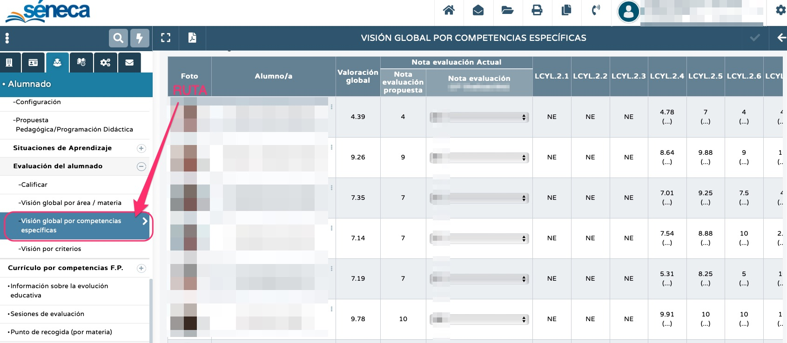

Esta pantalla recoge las calificaciones de nuestro alumnado en las distintas competencias específicas del currículo de nuestra asignatura. Para ello -tal y como establece la normativa-, Séneca recoge las calificaciones de los diferentes criterios asociados a cada competencia específica y calcula su media aritmética, siendo esta la nota de la competencia específica. Por ejemplo, si una competencia específica tiene asociados tres criterios de evaluación, cada uno de ellos aportará un tercio a la nota de dicha competencia. En el caso de que todavía no se haya evaluado uno o varios criterios, Séneca no tendrá en cuenta al criterio no evaluado.
Además, en esta pantalla se puede observar la valoración global, es decir, la media aritmética de todas las competencias específicas calificadas hasta el momento y una propuesta de nota. En cualquier caso, siempre será la / el docente quien decida la nota de la evaluación.
Podemos ver la pantalla "visión global por competencias específicas" en esta imagen:
